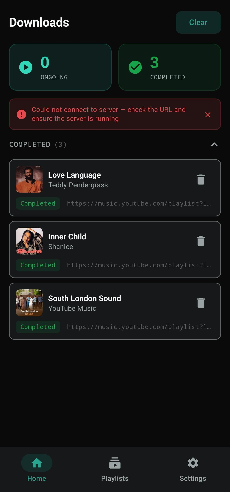
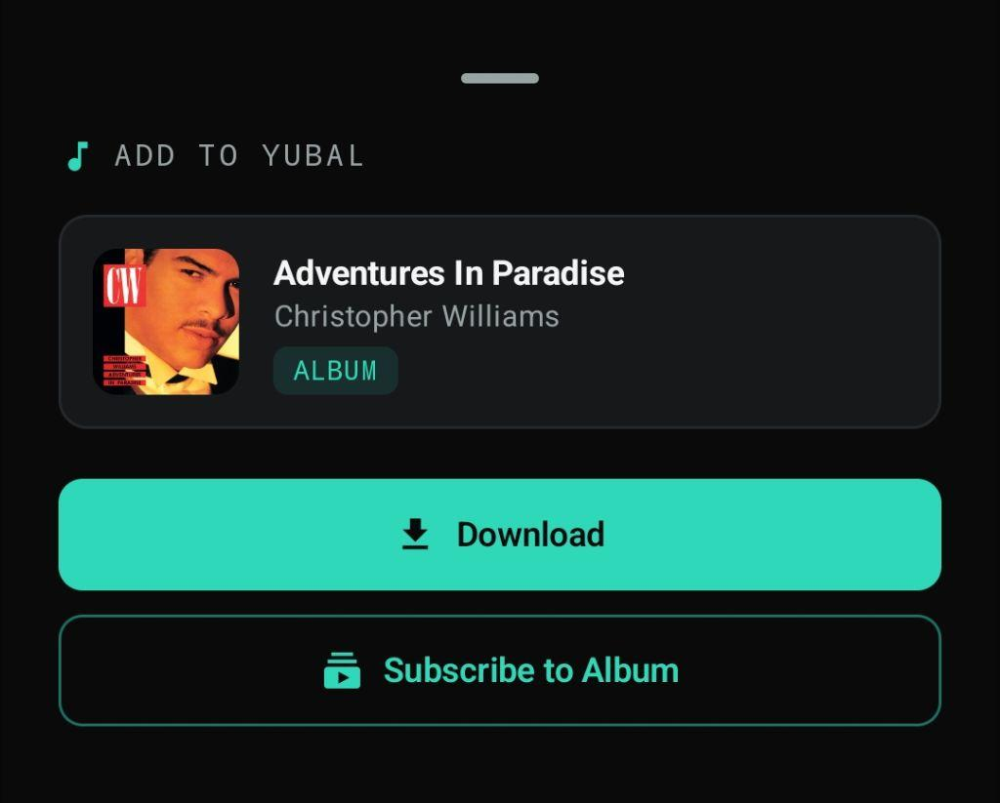
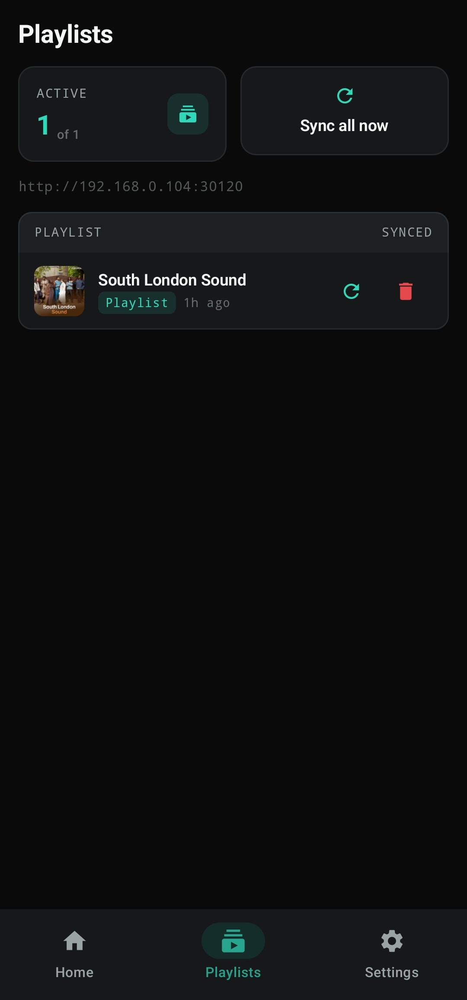
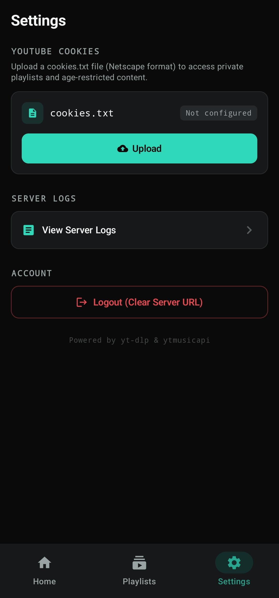
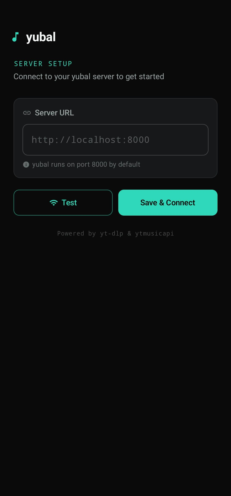

Own your music.
Not a subscription.
yubal downloads and syncs music from YouTube straight to your own server — tagged, artwork included, and organized automatically. This is the Android app that puts it in your pocket.





Everything your desktop dashboard does. In your pocket.
The Android app mirrors your yubal server in real time — queue downloads, manage syncing playlists, and get notified the moment a track lands.
Paste a link, watch it move through fetching, downloading, and importing with a live wavy progress bar.
Share any track, album, or playlist link straight from YouTube into yubal — a preview pops up, one tap queues it.
Subscribe once. New tracks get pulled in automatically on your own schedule, no re-checking required.
Upload cookies for private content, browse raw server logs, and manage your connection — all on device.
Point the app at your server URL, test the connection, and you're syncing — no accounts, ever.
Point the app at a server you control.
Run the yubal server
Deploy the Docker image on your NAS, home server, or VPS. Takes one command.
Connect the app
Enter your server URL, tap Test Connection, and you're synced — no accounts, no cloud middleman.
Share and forget
Share any YouTube link into yubal from your phone. It queues, downloads, and tags itself.
Frequently asked questions
What is YubalKt? +
YubalKt is a native Android client for the self-hosted yubal server. It lets you queue downloads, manage playlist subscriptions, and monitor jobs from your phone — no browser required.
Do I need a server to use this app? +
Yes. This app requires an active, self-hosted yubal server instance reachable from your device. You'll need to run the server (via Docker or similar) before the app can connect.
How do I share links into the app? +
From YouTube, YouTube Music, or your browser, use the native Share action and select yubal. A preview sheet will appear with the content's title, artist, and thumbnail — one tap to download or subscribe.
Can I sync playlists automatically? +
Yes. Subscribe to any playlist or album URL, and the app will sync new tracks automatically on your server’s schedule. You can also trigger a manual sync for any subscription.
What about age-restricted or private content? +
You can upload a cookies.txt file (Netscape format) from the Settings screen. This unlocks private playlists and age‑restricted downloads.
How do I get started? +
Make sure your yubal server is running and reachable. Launch the app, enter your server URL (e.g. http://192.168.1.50:8000), tap Test, then Save & Connect. Done.
Is this the official yubal app? +
It's a companion app built by the community, designed to pair with the official yubal server. It mirrors the web UI's style and functionality, putting the same experience in your pocket.
Your library. Your server. Your rules.
Free and open source — yubal never touches the cloud.